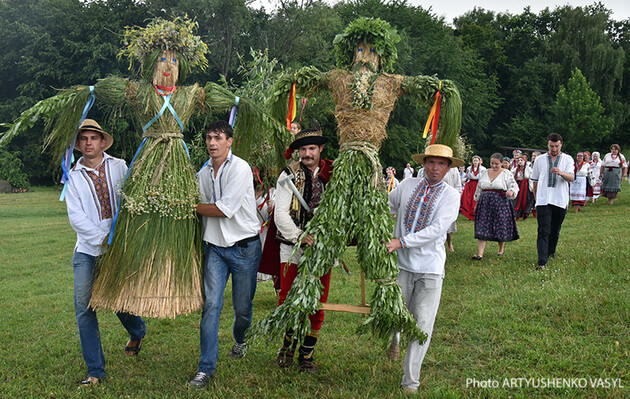
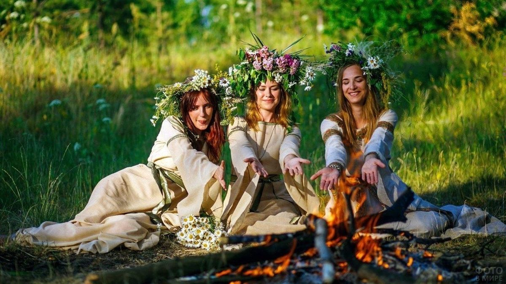
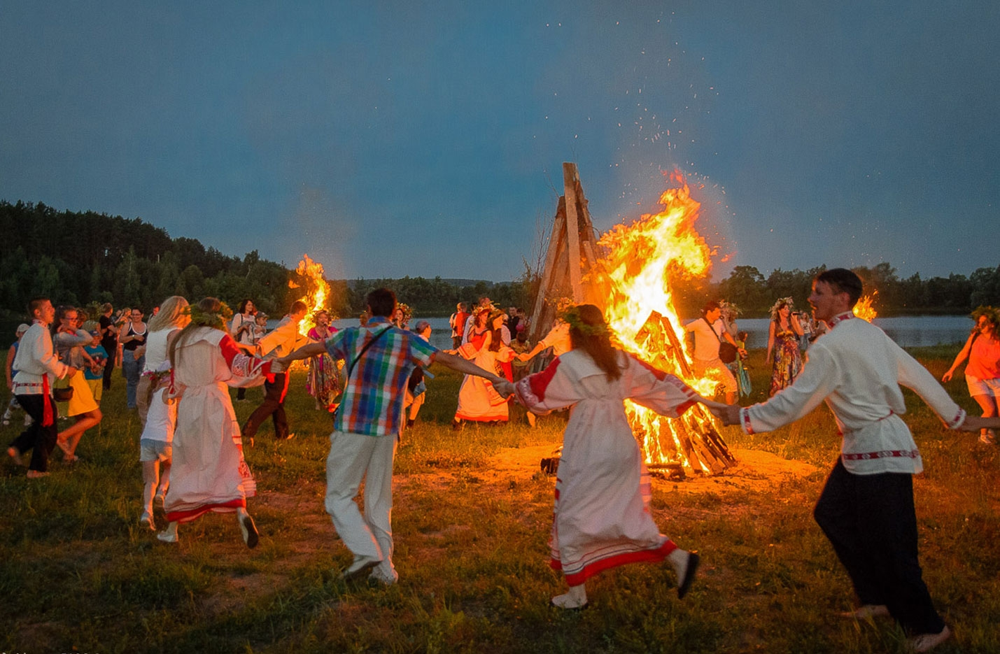
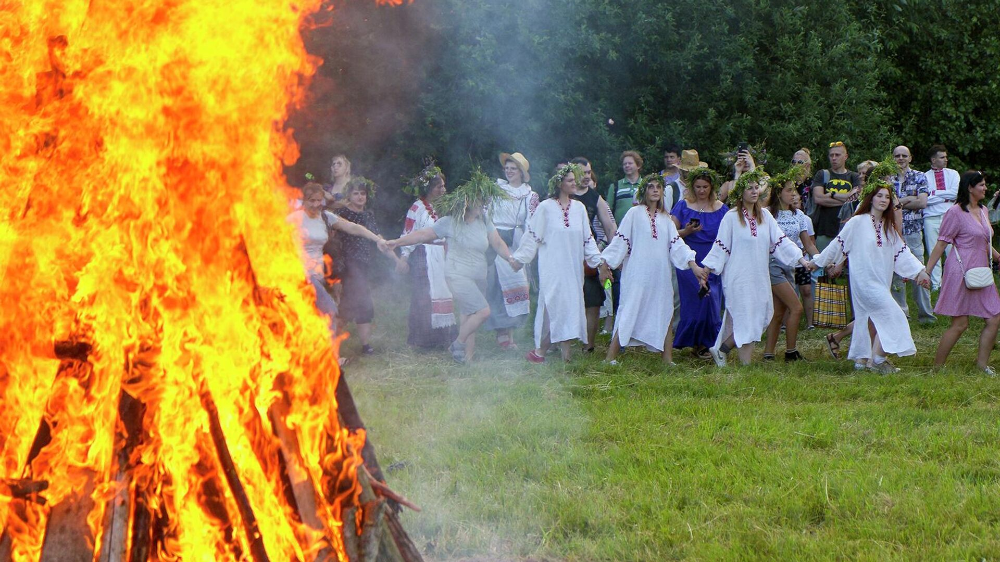
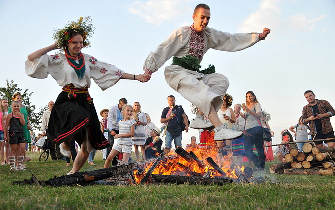
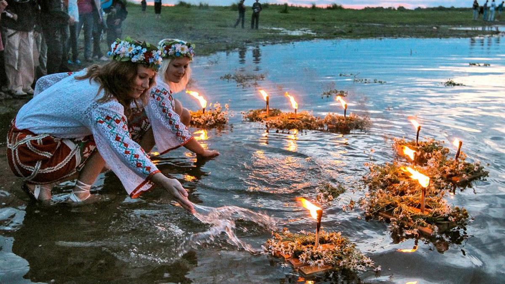
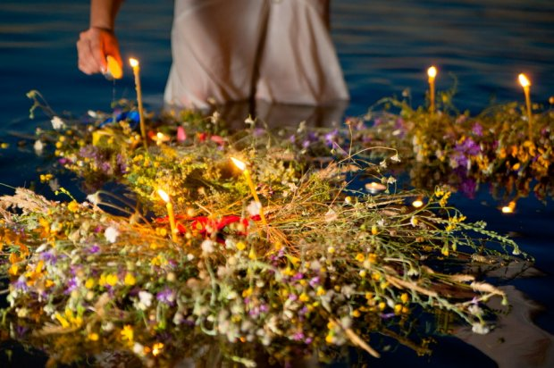
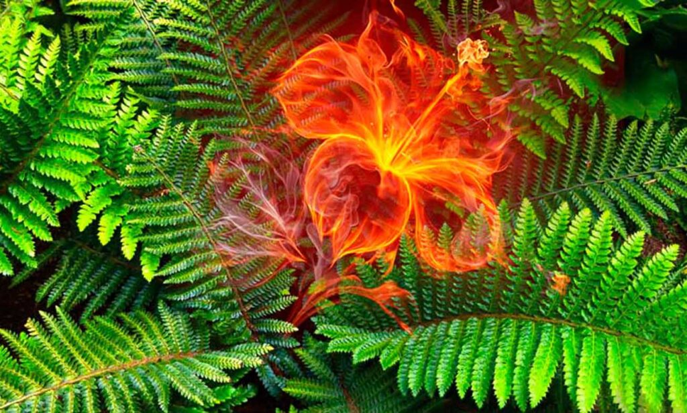

IVANA KUPALA
Ivana Kupala ist ein Volksfest der Ostslawen. Es bedeutet dem Höhepunkt der Natur und ist mit der Sonnenwende verbunden, die das Jahr in zwei Hälften teilt. Vor dem Fest werden die Tage länger, danach kürzer. Die Sonnenwende findet am 20. oder 21. Juni statt, je nachdem, ob es ein Schaltjahr ist. Die Nacht vor dem Fest hat eine besondere Bedeutung und ist mit vielen alten Traditionen und Bräuchen verbunden.
Nach slawischen Traditionen waren die Hauptfiguren des Festes die heidnischen Götter Kupalo, der Beschützer der Liebe und der Ernte, und Mara, die den Winter symbolisiert und Krankheiten und Hunger bringt. Das Fest wurde an vorher vereinbarten Orten gefeiert, meist auf Wiesen in der Nähe von Flüssen. Aus Zweigen oder Stroh wurden Puppen von Kupalo und Mara hergestellt.
Mädchen haben Kränze aus Feldblumen hergestellt und versammelten sich vor Sonnenuntergang. Nachmittags wurden die Puppen auf der Wiese aufgestellt. Zuerst tanzten die Mädchen um Kupalo. Die Jungen machten ein großes Feuer, über das alle gesprungen haben, um sich zu reinigen. Das Feuer von Kupala hat große magische Kraft. Das ganze Dorf versammelte sich um das Feuer.
Frauen, die nicht zum Fest gekommen sind, galten als Hexen.
Es wurde auch geglaubt, dass ein Paar, das sich liebt und gemeinsam über das Feuer springt, ein Leben lang zusammenbleiben wird.
Am Ende des Festes verbrannten die Jungen die Puppe von Kupalo, und die Mädchen ertränkten Mara im Fluss. Nach dem Ertränken von Mara zündeten die Mädchen Kerzen an, befestigten sie an ihren Kränzen und lassen sie auf dem Wasser treiben.
Während die Kränze treiben, gehen die Mädchen am Fluss entlang und singen. Wenn der Kranz gut schwimmt und die Kerze brennt, wird das Mädchen heiraten. Wenn der Kranz sich dreht, bleibt das Mädchen ledig. Wenn der Kranz untergeht, wird sie nicht heiraten.
Es gibt eine Legende über die Farnblüte, die nur in der Nacht von Ivan Kupala erscheint. Der Farn blüht nur einen kurzen Moment in der kürzesten Nacht des Jahres vor dem Tag von Ivan Kupala. Diese Blume zu finden ist sehr schwierig, da sie von bösen Geistern bewacht wird. Nur ein junger Mann, oft unverheiratet oder der einzige Sohn in der Familie, kann sie finden. Wer die Farnblüte findet, soll die Gabe der Zukunftsvision und die Fähigkeit haben, die Sprache der Tiere und Vögel zu verstehen, Kranke zu heilen und versteckte Schätze zu finden.
